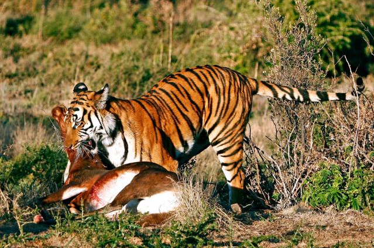
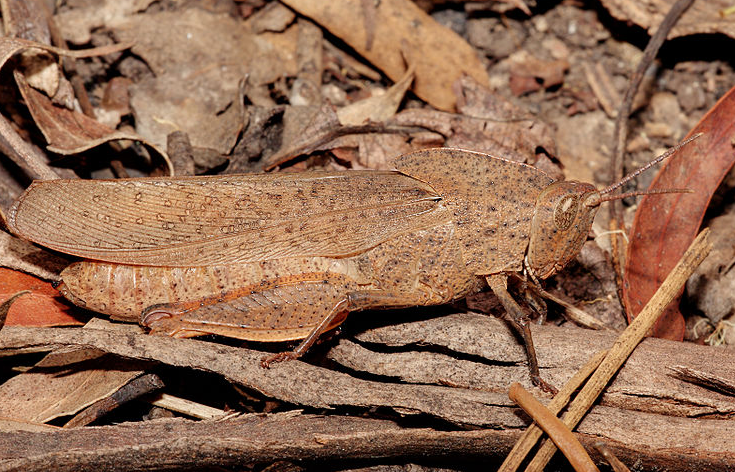
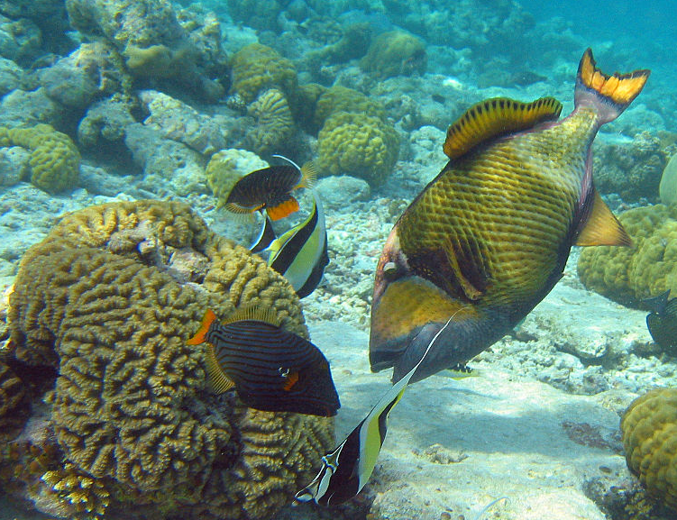
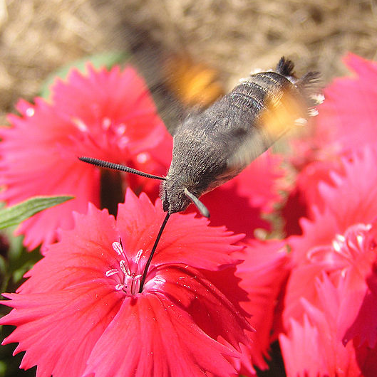
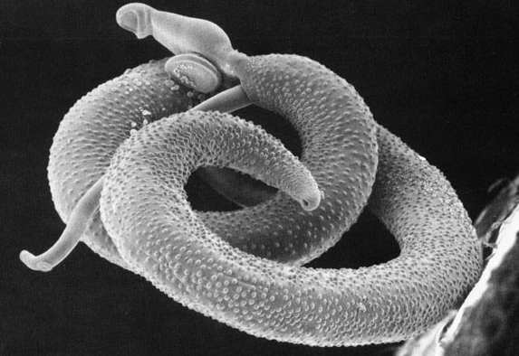

Abiotic vc Biotic Abiotic factors refer to non-living physical and chemical elements in the ecosystem. Abiotic resources are usually obtained from the lithosphere, atmosphere, and hydrosphere. Examples of abiotic factors are water, air, soil, sunlight, and minerals. Biotic factors are living or once-living organisms in the ecosystem. These are obtained from the biosphere and are capable of reproduction. Examples of biotic factors are animals, birds, plants, fungi, and other similar organisms. What are biotic and abiotic factors? Biotic components are living organisms in an ecosystem. A biotic factor is a living organism that affects another organism in its ecosystem. Examples include plants and animals that the organism consumes as food, and animals that consume the organism. The following video covers the biotic and abiotic factors that influence most ecosystems, and introduces key vocabulary relevant to ecology: Relevance The scope of abiotic and biotic factors spans across the entire biosphere, or global sum of all ecosystems. Such factors can have relevance for an individual within a species, its community or an entire population. For instance, disease is a biotic factor affecting the survival of an individual and its community. Temperature is an abiotic factor with the same relevance. Some factors have greater relevance for an entire ecosystem. Abiotic and biotic factors combine to create a system or, more precisely, an ecosystem, meaning a community of living and nonliving things considered as a unit. In this case, abiotic factors span as far as the pH of the soil and water, types of nutrients available and even the length of the day. Biotic factors such as the presence of autotrophs or self-nourishing organisms such as plants, and the diversity of consumers also affect an entire ecosystem. Influencing Factors Abiotic factors affect the ability of organisms to survive and reproduce. Abiotic limiting factors restrict the growth of populations. They help determine the types and numbers of organisms able to exist within an environment. Biotic factors are living things that directly or indirectly affect organisms within an environment. This includes the organisms themselves, other organisms, interactions between living organisms and even their waste. Other biotic factors include parasitism, disease, and predation (the act of one animal eating another). Interaction Examples The significance of abiotic and biotic factors comes in their interaction with each other. For a community or an ecosystem to survive, the correct interactions need to be in place. A simple example would be of abiotic interaction in plants. Water, sunlight and carbon dioxide are necessary for plants to grow. The biotic interaction is that plants use water, sunlight and carbon dioxide to create their own nourishment through a process called photosynthesis. On a larger scale, abiotic interactions refer to patterns such as climate and seasonality. Factors such as temperature, humidity and the presence or absence of seasons affect the ecosystem. For instance, some ecosystems experience cold winters with a lot of snow. An animal such as a fox within this ecosystem adapts to these abiotic factors by growing a thick, white-colored coat in the winter. Decomposers such as bacteria and fungi are examples of biotic interactions on such a scale. Decomposers function by breaking down dead organisms. This process returns the basic components of the organisms to the soil, allowing them to be reused within that ecosystem. Species Interactions in the Ecosystem In addition to the abiotic factors on the environment, the populations can be very much affected by the interactions between the organisms in the ecosystem. The "species interactions" explains most of the domain of ecology. The major types of interactions are discussed below: Competition The process competition is thought to be a part of daily life. Competition is a relationship in which different organisms or populations in the ecosystem attempt to use the same limited resources at the same time. The limiting resource may be water, prey, light, water etc, which is responsible for the organism's growth and survival in the ecosystem. Competition can occur both within (intra specific) and between (inter specific) species. An individual experiences both types of competition, but the range of the competitions varies widely from population to population and species to species. Competition among the individuals can also be characterized as resource competition or interference competition. The resource competition is characterized by the organism's completion directly for the limiting nutrient in the ecosystem, there by obtaining as much each individual can. An example is the competition of fly maggots in a mouse carcass, where few individuals obtain enough nutrients for their reproduction and survival. Resource competition may not always cause the exclusion of one species instead some species can coexist, with a marked reduction in their growth potential capabilities. In interference competition, the individuals harm each other directly by a physical force. In this case either the individuals interact with foraging, survival, and reproduction of others or directly prevent their physical organization in a part of their habitat. An example is the physical intimidates of caterpillar to other. Interference competition generally results in the exclusion of one of the two competitors. Early in the 20th Century, A.J. Lotka and V. Volterra developed a model for population growth, which explains that two species cannot compete for the same limiting resource for a long period. This is known as Competitive exclusion principle. G.F.Gausse, a Russian ecologist, demonstrated that Paramecium aurellia competes and later displaces Paramecium caudatum which apparently confirmed the Competitive exclusion theory. Recent studies showed the coexistence of some killer particle in Gausse's strain P. aurellia is responsible for such an outcome. Later Thomas Park showed that due to interference competition, the confused flour beetle and the red flower beetle would not coexist and hence one species always excluded the other. Predation An organism which feeds on another organism for their food is called predator while the organism that is fed upon is termed as the prey. This kind of interaction between the prey and predator is known as predation. Typically a predator tends to be larger than that of the prey, and hence they consume many preys during their life cycle. During the act of predation often the death of prey will occur due to the absorption of the prey's tissue by the predator (Figure 1). Typical examples of predation are bats eating the insects, snakes eating mice, and the whales eating the krill.  In the case of some complex food webs, a predator can also become a prey for the species. Most of the organisms in the ecosystem evolved some kind of defense mechanisms against the predations. Camouflage This is a blending phenomenon of an organism with the background color of its habitat is a common method of avoiding detection by their predators in the ecosystem. An example is grasshoppers which can blend perfectly with the materials on which they feed. The veins of leaves are often mimicked on the grasshopper's wings (Figure 2).  Mimicry Besides camouflage, some organisms mimic other animals, for example, some hoverflies mimic wasps in the ecosystem. The similarities between one species to another protect one or both the species involved in the mimicking process. The similarities can be either in their appearance, behavior, sound, movement or location and which helps them protect themselves from the predators. Commensalism Commensalism is an interspecific relationship between two organisms in the ecosystem where one species benefits while the other species remains unaffected (Figure 3). In this association, usually a commensal can obtain nutrients from the host species for their shelter, growth, and locomotion. The host remains unaffected. The host is larger and unmodified, while the commensal is smaller with some modified structural adaptations with its habitats.  Mutualism Unlike commensalism, mutualism is an interspecific interaction between two organisms in the ecosystem with benefit to both the associating members in the interaction. During this interaction, populations of each interacting species grow survive and reproduce at a higher rate in the presence of the other interacting species. Pollination is a good example to explain mutualism, where the plant gets benefit from the dispersal of pollen the pollinator obtaining a meal of nectar from the flower (Figure 4).  Parasitism A parasite feeds on the host, but they generally do not destroy it. Parasites are usually smaller then the host. Parasites may have more than one host during its life cycle. The host evolved some defense mechanisms against the parasites; the most important is the immune responses such as cellular defenses. Also parasites can substantially decrease the host population sizes. The relationship between the parasites and the hosts is known as Parasitism. Tapeworms, blood sucking leeches and tape worms are typical examples of parasites (Figure 5).  Organization of Life: Species, Populations, Communities, and Ecosystems Scientists have recognized that life can be organized into several different levels of function and complexity. These functional levels are: species, populations, communities, and ecosystems. Species Species are the different kinds of organisms found on the Earth. A more exact definition of species is a group of interbreeding organisms that do not ordinarily breed with members of other groups. If a species interbreeds freely with other species, it would no longer be a distinctive kind of organism. This definition works well with animals. However, in some plant species fertile crossings can take place among morphologically and physiologically different kinds of vegetation. In this situation, the definition of species given here is not appropriate. Populations A population comprises all the individuals of a given species in a specific area or region at a certain time. Its significance is more than that of a number of individuals because not all individuals are identical. Populations contain genetic variation within themselves and between other populations. Even fundamental genetic characteristics such as hair color or size may differ slightly from individual to individual. More importantly, not all members of the population are equal in their ability to survive and reproduce. Communities Community refers to all the populations in a specific area or region at a certain time. Its structure involves many types of interactions among species. Some of these involve the acquisition and use of food, space, or other environmental resources. Others involve nutrient cycling through all members of the community and mutual regulation of population sizes. In all of these cases, the structured interactions of populations lead to situations in which individuals are thrown into life or death struggles. In general, ecologists believe that a community that has a high diversity is more complex and stable than a community that has a low diversity. This theory is founded on the observation that the food webs of communities of high diversity are more interconnected. Greater interconnectivity causes these systems to be more resilient to disturbance. If a species is removed, those species that relied on it for food have the option to switch to many other species that occupy a similar role in that ecosystem. In a low diversity ecosystem, possible substitutes for food may be non-existent or limited in abundance. Ecosystems Ecosystems are dynamic entities composed of the biological community and the abiotic environment. An ecosystem's abiotic and biotic composition and structure is determined by the state of a number of interrelated environmental factors. Changes in any of these factors (for example: nutrient availability, temperature, light intensity, grazing intensity, and species population density) will result in dynamic changes to the nature of these systems. For example, a fire in the temperate deciduous forest completely changes the structure of that system. There are no longer any large trees, most of the mosses, herbs, and shrubs that occupy the forest floor are gone, and the nutrients that were stored in the biomass are quickly released into the soil, atmosphere and hydrologic system. After a short time of recovery, the community that was once large mature trees now becomes a community of grasses, herbaceous species, and tree seedlings. Structural and Behavioral Adaptations All organisms have adaptations that help them survive and thrive. Some adaptations are structural. Structural adaptations are physical features of an organism like the bill on a bird or the fur on a bear. Other adaptations are behavioral. Behavioral adaptations are the things organisms do to survive. For example, bird calls and migration are behavioral adaptations. Adaptations are the result of evolution. Evolution is a change in a species over long periods of time. Adaptations usually occur because a gene mutates or changes by accident! Some mutations can help an animal or plant survive better than others in the species without the mutation. For example, imagine a bird species. One day a bird is born with a beak that is longer than the beak of other birds in the species. The longer beak helps the bird catch more food. Because the bird can catch more food, it is healthier than the other birds, lives longer and breeds more. The bird passes the gene for a longer beak on to its offspring. They also live longer and have more offspring and the gene continues to be inherited generation after generation. Eventually the longer beak can be found in all of the species. This doesn't happen overnight. It takes thousands of years for a mutation to be found in an entire species. Over time, animals that are better adapted to their environment survive and breed. Animals that are not well adapted to an environment may not survive. The characteristics that help a species survive in an environment are passed on to future generations. Those characteristics that don't help the species survive slowly disappear. |